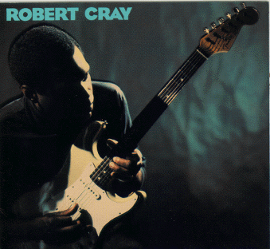

I Was Warned - Robert Cray

 Songs on the CD
Songs on the CD
- Just a Loser (T. Kaihatsu)
- I'm a Good Man (R. Cray, D. Walker)
- I Was Warned (R. Cray, D. Walker)
- The Price I Pay (R. Cray, D. Walker)
- Won The Battle (J. Pugh, D. Walker)
- On the Road Down (R. Cray, S. Cooper)
- A Whole Lotta Pride (R. Cray, D. Walker)
- A Picture of a Broken Heart (D. Walker, B. Scaggs)
- He Don't Live Here Anymore (J. Pugh, D. Walker)
- Our Last Time (J. Pugh, J. Hanes)
This is my personal Favorite Cray CD. It has a good mix of upbeat
tunes and heart renching blues. "Just a Loser" and "On the Road Down"
are excellent up beat tunes. "A Whole Lotta Pride" and "Our Last Time"
are to excellent tracks as well. I think this album show cases The Robert
Cray Bands versatility and depth.
If you're looking for a place to start, this is a great
album. If like a lot of people you started with Strong Persuader, this is
an excellent follow up.
The Robert Cray Band
Robert Cray - vocals, guitar
Tim Kaihatsu - guitar
Jim Pugh - keyboards
Kevin Hayes - drums
Karl Sevareid - bass
The Memphis Horns
Andrew Love - tenor sax
Wayne Jackson - trumpet and trombone
Some brief credits:
© 1992 PolyGram Records
Producer - Dennis Walker
Direction - Mike Kappas - The Rosebud Agency
Art Direction - Margery Greenspan
Design - Phil Yarnall
Photography - Jeff Katz
Back to my Cray page
Created: 12/4/95
By: rwhiffen
Mod: 4/23/01